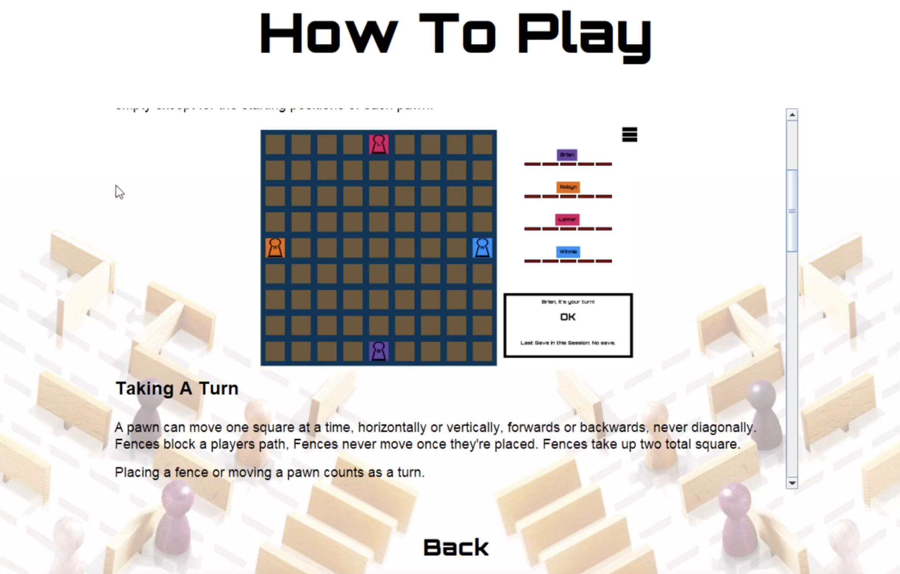
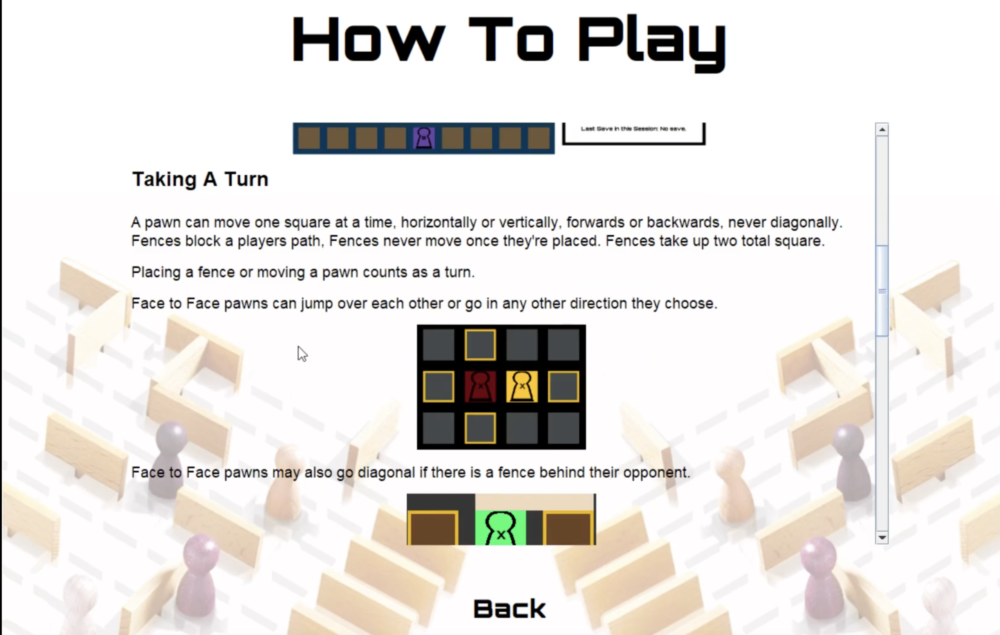
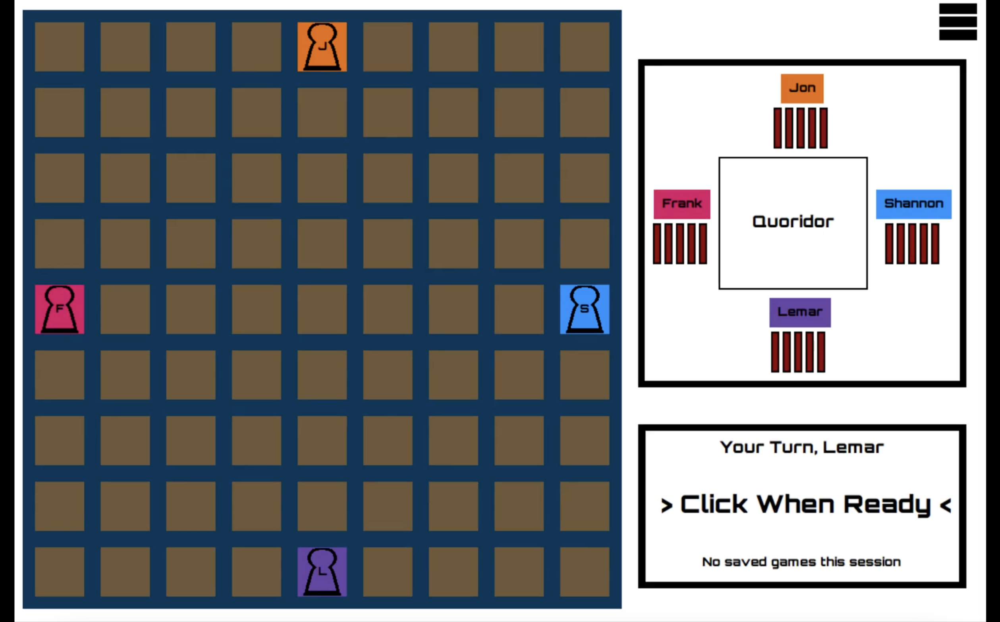
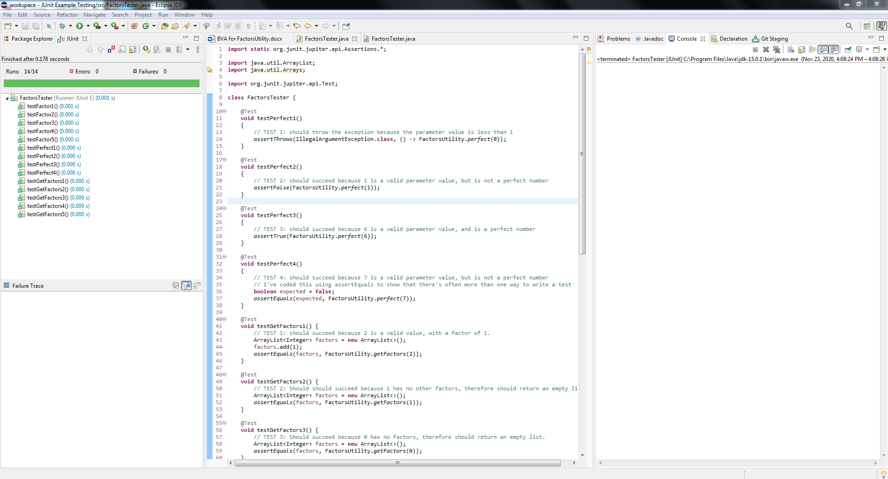

Quoridor Board Game
This was an academic project for a software engineering course. It was done by my friends and I in September
2020 until December 2020.
An iterative design process of a Quoridor game clone.
Our plan for connecting four players involves a typical server/client relationship. One player acts as the server and
accepts three opponents. AI opponents would run directly on the server host, and all human opponents would connect as
clients. Login authentication and security can be layered if required.
Communication between server and clients would likely involve a TCP/IP connection. The server would assign an IP address
and port for connection. These connection details could be relayed to the other opponents via some method outside the system
(email, text message, etc.). Once clients are connected, packets describing game states can be transferred between server
and client.
At each turn, get the GameState, send it to the server, which forwards to all clients. Everybody calls BuildAssets with the
latest game state. Each player is now synced, and play can continue.
Available Framework:
GameState Class: To capture the current state of the game, the GameState class has been provided to capture three pieces of
data (Player currentPlayers[4], GameTile allTiles[rows][cols], and int nextToPlay). All games can be reconstructed from
their GameState using BuildAssets.
BuildAssets: This factory class takes the pertinent information for starting/resuming a game and can use it to construct
a game board and in-game UI, allowing play to resume. Using existing images and assets, BuildAssets can finish in a fraction
of a second, with no visible lag or interruptions in the display.
I worked on this game for 4 months.
Technologies:
- - Java/JavaScript
- - Networking Document
- - JUnit Testing
New Game

Instructions


Board

Load Game

JUnit Testing
